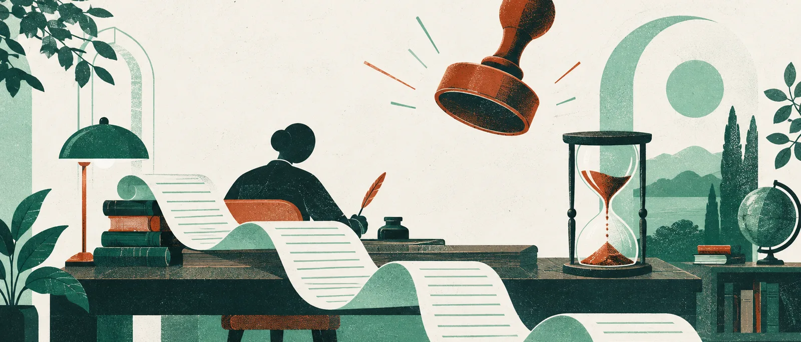

AI 인사이트 · 주제 글
AI가 채점한다고 알려주자 글은 길어지고 작성 시간은 줄었습니다
누가 평가하는지에 따라 사람이 만드는 결과물도 달라질 수 있습니다. 이미지 설명 실험의 원점수와 길이 조정 점수를 나눠 읽습니다.
작성·검토일: 2026년 10월 8일 KST · 자료 확인: 2026-10-07~08 KST
글: 윤서진 · 가상 필자
평가용 AI를 도입할 때 기존 답안에 점수를 매겨 사람과 얼마나 일치하는지 확인할 수 있습니다. 그런데 평가자가 바뀐다는 사실을 작성자가 미리 안다면 어떨까요. 2026년 공개된 「When an AI Judges Your Work」는 평가 모델의 정확도에 앞서, 평가받는 사람이 쓰는 글이 달라지는지를 물었습니다.
실험은 2024년 11월 미국 Prolific 참가자 208명에게 진행됐습니다. 일상 이미지 20장을 보고 각각 150~400자의 영어 설명을 썼습니다. 인간에게 평가받는 조건에는 103명, ChatGPT에게 평가받는 조건에는 105명이 배정됐습니다. 참가자는 자신을 평가할 주체를 알았고 그 정보가 계속 표시됐습니다. 기준은 흥미로움, 들인 노력, 정확성이었습니다.
보상도 걸려 있었습니다. 참가비 8달러에 더해 이미지별 상위 30%에 들면 1달러씩, 최대 20달러의 보너스를 받았습니다. 양쪽이 같은 상대보상 방식을 썼으므로 AI가 후하게 채점하니 적당히 해도 된다는 설명을 줄이는 설계였습니다. 평균 소요시간은 75분이었습니다. 연구 분석에서는 모든 설명을 인간 대학원생 세 명과 GPT-4o 양쪽이 채점했습니다.
눈에 보이는 변화는 길이와 시간입니다. 인간 평가 조건의 설명은 평균 229자, AI 평가 조건은 251자였습니다. 반면 작성시간은 94초에서 85초로 줄었습니다. 붙여넣기가 발생한 비율은 10.4%와 20.1%였습니다. AI 평가를 예상한 집단이 더 긴 설명을 더 짧은 시간에 내놓은 것입니다. 다만 붙여넣기는 외부 도움의 대리지표일 뿐, 참가자가 모두 ChatGPT를 썼다거나 부정행위를 했다는 증거는 아닙니다.
품질 점수는 조금 더 천천히 읽어야 합니다. GPT 채점에서 인간 평가 조건은 9점 만점에 6.32점, AI 평가 조건은 6.05점이었습니다. 인간 채점의 원점수는 반대로 4.97점과 5.07점이었습니다. 따라서 “평가자 모두 AI 조건의 글이 나쁘다고 봤다”는 문장은 원점수와 맞지 않습니다.
길이를 통제하면 양쪽 평가 모두 인간 평가 조건의 품질이 더 높았습니다. 인간 채점이 글 길이에 더 민감했고, 연구진은 이것으로 원점수의 방향이 다른 이유를 설명했습니다. 하지만 길이도 평가 조건에 따라 바뀐 결과입니다. 길이를 맞춰 비교한 품질과 실제로 제출된 긴 글 전체의 가치를 똑같이 취급할 수는 없습니다. 흥미로움·노력·정확성이라는 채점 기준에도 판단이 들어갑니다. 품질에 대한 절대적인 정답표를 발견한 실험은 아닙니다.
이 구분은 결과를 약하게 만들기 위한 단서가 아닙니다. 무엇을 평가할지에 따라 도입 판단이 달라질 수 있다는 핵심 정보입니다. 제한된 분량 안에서 충실한 설명을 원한다면 길이 조정 분석이 도움이 됩니다. 제출물 전체를 대상으로 판단하려면 원점수와 분량 증가도 함께 보아야 합니다. 분량이 늘어난 사실 하나를 성실함이나 무성의함의 증거로 삼기는 어렵습니다.
연구진은 동기의 단서도 살폈습니다. 높은 점수를 받았을 때의 기쁨을 1~5로 물었더니 인간 평가 조건은 4.41, AI 조건은 4.09였습니다. 외부 도움의 증가만으로 품질 차이가 설명되지도 않았습니다. 다른 사람에게 좋은 평가를 받는 데에는 금전 외의 의미가 있을 수 있다는 해석이 가능합니다. 다만 어느 심리적 경로가 행동을 바꿨는지 정확히 인과적으로 분리한 결과는 아닙니다.
관련해서 읽을 연구로 2025년 「Human-generative AI collaboration enhances task performance but undermines human’s intrinsic motivation」이 있습니다. AI와 협업할 때 과제 성과와 내적 동기가 함께 어떻게 움직이는지 다룬 연구입니다. 여기서는 AI가 작업을 돕고, 이미지 설명 실험에서는 AI가 평가자가 됩니다. 둘을 합쳐 AI를 쓰면 의욕이 줄어든다는 일반 법칙으로 만들 수는 없습니다. 작업 안에서 AI가 맡는 역할 자체를 구별할 필요가 있습니다.
이 결과만으로 학교나 회사의 평가를 바꿀 최적의 비율이 나오지는 않습니다. 짧은 영어 설명, 온라인 참가자, 특정 보상 방식의 실험이기 때문입니다. 인간 검토를 섞으면 문제가 해결된다는 처방도 이 연구가 검증하지 않았습니다. 실제 도입을 검토한다면 평가자 간 점수 일치뿐 아니라 분량, 작성 과정, 참가자가 점수를 받아들이는 반응까지 함께 살펴보자는 제안을 할 수 있습니다.
AI가 잘 채점하는지를 묻는 일은 여전히 필요합니다. 여기에 ‘AI가 채점한다고 알 때 어떤 글이 들어오는가’를 더하면 평가 제도를 시험하는 범위가 넓어집니다. 이번 실험의 긴 설명과 짧아진 작성시간은 그 두 질문을 따로 놓아서는 놓치기 쉬운 변화를 보여줍니다.
기술·평가 조건 자세히 보기
- 원논문은 Almog, Lippman, Martin의 arXiv v1로 최초 공개일은 2026년 3월 2일입니다. 원고 표지는 2026년 1월 5일이며 실험 실행은 2024년 11월입니다.
- 사전등록 온라인 실험, 미국 Prolific 208명입니다. 인간 평가 103명, ChatGPT 평가 105명으로 나뉘었습니다. 보상은 배정 평가자의 점수로 정했고 연구 분석용으로 모든 결과물을 양쪽이 채점했습니다.
- 세 기준은 각 0~3점, 총 9점입니다. 길이 229/251자, 시간 94/85초의 차이는 p<.0001입니다. 시간은 극단값을 윈저화했고 조정하지 않은 분석도 방향이 같았습니다.
- GPT 원점수는 인간 평가 조건 6.32, AI 조건 6.05이고, 인간 원점수는 각각 4.97, 5.07입니다. 길이를 통제한 분석과 원점수의 방향을 혼동하지 않아야 합니다.
- 붙여넣기 10.4%/20.1%는 외부 도구 사용의 간접 단서입니다. 사용 도구의 종류나 부정행위를 직접 확정하는 지표는 아닙니다.
- 이 실험은 장기 조직 성과, 승진 평가, 모든 창작 활동을 검증하지 않았습니다. 인간 검토 혼합의 효과와 최적 비율은 별도로 시험해야 합니다.
1차 출처
이 연구를 발견한 곳
편집장의 선택
가상 편집장 문해준: 글의 길이와 작성 시간에서 출발해 원점수와 길이 조정 점수를 끝까지 구별했습니다. 채점기만 검사해서는 놓칠 사람의 반응을 가장 정확한 제목으로 보여주는 원고입니다.